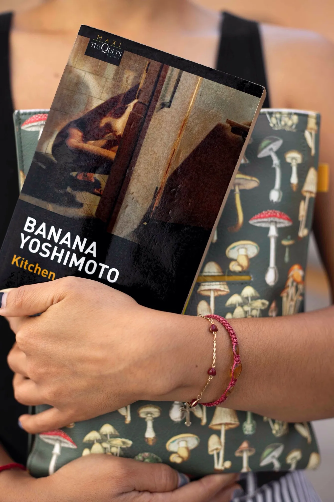
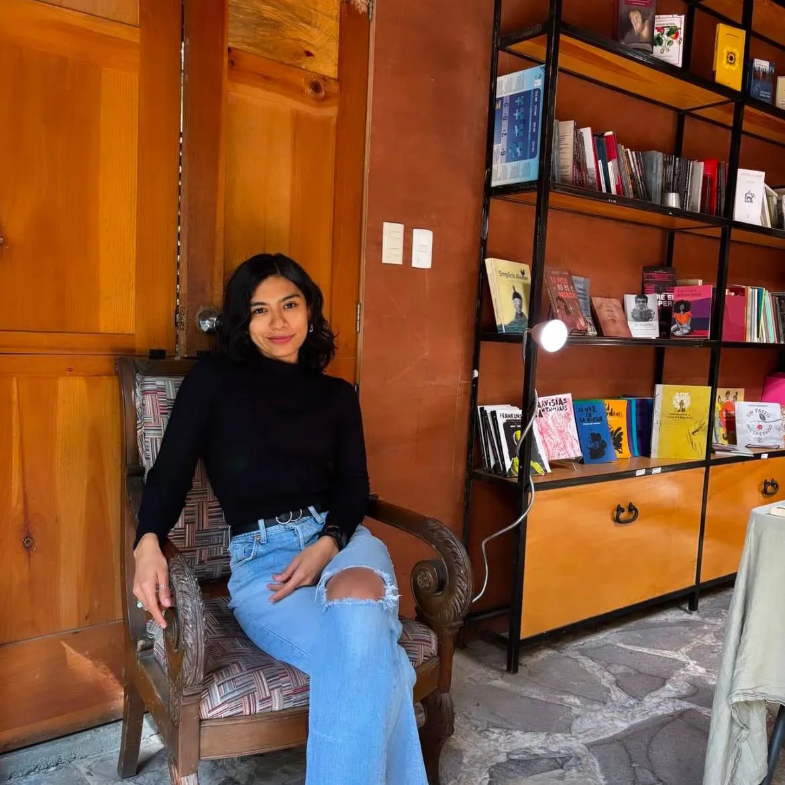

Kitchen
En esta ocasión, compartimos la reseña de “Kitchen”, escrita por Banana Yoshimoto. Quien nos acerca a la novela, desde una lectura personal y sensible, es Luisa Guadarrama, visitante habitual de Argonáutica.

Kitchen es la primera novela de Banana Yoshimoto. Narra la historia de Mikage, una joven que queda completamente sola en una casa inmensa, hasta que Yuichi toca a su puerta y le propone ir a vivir con él y con su madre, Eriko, quien tras la muerte de la madre biológica de Yuichi, transiciona en una mujer hermosa y profundamente acogedora.
Es un libro breve, pero tremendamente profundo. En pocas páginas, Yoshimoto entrelaza la añoranza, la pérdida, la ternura y la búsqueda de un lugar propio. La cocina, como metáfora del hogar y del refugio, es uno de los símbolos más bellos de la novela.
Kitchen no es una historia sobre la pérdida en términos dramáticos. Es un relato sobre cómo se vive cuando ya no queda casi nadie, sobre cómo el duelo se acomoda —o sostiene— en lo cotidiano.
Mikage no atraviesa su dolor a través del llanto constante ni hablando explícitamente de lo que siente. Lo atraviesa durmiendo en cocinas, buscando espacios cálidos, aferrándose a la rutina como quien se aferra a la vida. Desde una mirada emocional, es significativo: el duelo no siempre se expresa en palabras; muchas veces se regula a través del cuerpo, de los vínculos, del entorno y de lo cotidiano.
Yoshimoto retrata el duelo de una forma profundamente humana. Nunca lo romantiza, nos muestra cómo los vínculos —incluso los inesperados— pueden convertirse en ese soporte que nos recuerda que no todo se pierde, aunque así lo parezca.
Uno de los aspectos más conmovedores del libro es la forma en que Yoshimoto aborda los vínculos. No son relaciones salvadoras ni ideales, sino presencias suficientes y constantes. Personas que no reparan el dolor, lo acompañan. En los procesos emocionales reales, suele ser lo más transformador: saber que hay otro que sostiene.
Lo poderoso de la historia es que, más allá de la cocina como espacio literal, nos invita a cuestionar: ¿cuál es ese lugar —físico o simbólico— donde podemos sostenernos y sentirnos a salvo, incluso en medio del dolor?
Kitchen me recordó que la vida se sostiene tanto en las pérdidas como en los vínculos. La cocina, para la protagonista, es más que un espacio físico: es el lugar donde es posible habitar, descansar y continuar.
Al leerlo me pregunté: ¿cuál es mi cocina? El rincón, físico o simbólico, donde puedo volver a mí misma, sostenerme y recordar que no lo he perdido todo.
Para ti, querida lectora ¿cuál es tu cocina?
La Navegante Literaria:

Luisa Guadarrama, psicóloga clínica e instructora de yoga terapéutico. Siempre acompañada de un libro, viajera, exploradora de sitios literarios, incorpora la literatura como una vía de reflexión y sensibilidad, integrando sus lecturas en la comprensión del mundo interno y de los procesos psicológicos. Es amante de los perros y habitual visitante de cafeterías por las mañanas.
Café La Fauna es un lugar para compartir un buen momento tomando café, comiendo o buscando libros en Argonáutica, su sala de lectura. Visítala en Morrow 8, Cuernavaca Centro.